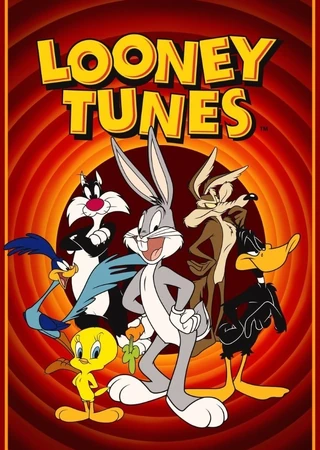

Looney Tunes
El primero fue llevado a los cines antes de The Neverending Story II: The Next Chapter y como una característica especial en el DVD de "La Loca Película del Conejo de la Suerte" (The Looney Looney Looney Bugs Bunny Movie). Doblado en 1992 bajo la dirección de Francisco Colmenero y participación del anteriormente mencionado (Pato Lucas e Insertos) junto con Alfonso Obregón (Bugs Bunny) y Herman López (Elmer Gruñon). A pesar de lo anteriormente mencionado, este corto lo transmiten con frecuencia en Tooncast y Boomerang con doblaje ibérico (doblado en España).
Desarrollo
La caricatura de Looney Tunes son muy importantes para el cine
Conclusión
El segundo fue un especial (perteneciendo a la serie de "Fantasías animadas de ayer y hoy") producido en 1991 conmemorando el aniversario 51 (1/2) de Bugs Bunny. El corto nunca fue lanzado en ese año, hasta que se estrenó el 13 de julio de 1997 por Cartoon Network